Station · 28 Sep: shorter first views, the lens rule rewritten, Geiger top right, and your full RSI fan
Every chart now opens on a shorter window (daily on 6 months, 3-day on 1 year, weekly on 2 years) and still zooms out to everything it had. The context lens follows one written rule that also works when you zoom. The Geiger chip sits top right. The intraday pages keep the rotating leader beside the targets, as you asked at about 09:55 (section 4). And the oscillator under the fan pages (the two-chart pages and the TARGETS · RSI and OTHER INDEXES · RSI pages) is now the Lab's whole fan: six lines plus the slow 2D-to-2W cloud. On stocks every line runs across the whole chart. On ES/NQ the intraday lines only cover about the last month (that is all the chart API holds for futures), and the panel now marks where they begin.
Branch station/zoom-fan-20260928 (from the live Station dedbc31), pushed to GitHub, not deployed. Pictures come from a headless browser on this MacBook (never on your screen), 1680 wide unless marked. The chart API only answers scintillahub.ai, so the test browser's reads went through a small local relay that asks with that address (read-only). One more relay change was made for the pictures only, and it is explained in section 6. Nothing was written to any database.
1 · The shorter first view (you approved it)
"Lookback proposal APPROVED (1W 3y→2y, 3D 2y→1y, 1D 11½→6 months, 4h 12→6 weeks; still zoom out)."
Each chart still reads the same number of bars as before (240, or 157 for weekly). It just opens on the newest part of them. The wheel, a pinch or a drag zooms back out to all of it. A double-click comes back to this first view. A price scale, the clouds and the RSI fan are all drawn for the bars on screen only, so they rescale with the window.
Timeframe
Opens on
About
Before (measured today)
After (measured today)
1W
104 bars
2 years
3 years
2 years
3D
120
1 year
SPY from 25 Sep 2024
SPY, TSM… from 26 Sep 2025
1D
126
6 months
stocks from 13 Oct 2025, ES from 10 Dec 2025
SPY from 27 Mar 2026, ES from 22 Apr 2026
4h · 3h
120
6 weeks · 4 weeks
12 weeks · 8 weeks
6 weeks · 4 weeks
1h
80
1 week
3 weeks
21 → 28 Sep
30m
96
3 sessions
MU, GOOGL from 16 Sep
MU, WMT from 23 Sep
15m · 2h · 6h · 12h (not in your list; same density)
128 · 96 · 120 · 120
2 sessions · 12 sessions · 6 weeks · 3 months
240 bars
as listed
Where it lives: CHART_VIEW_BARS in chart/index.html (and its twin station-shells/chart-v1/index.html). A deep link with ?bars=N still opens on everything.
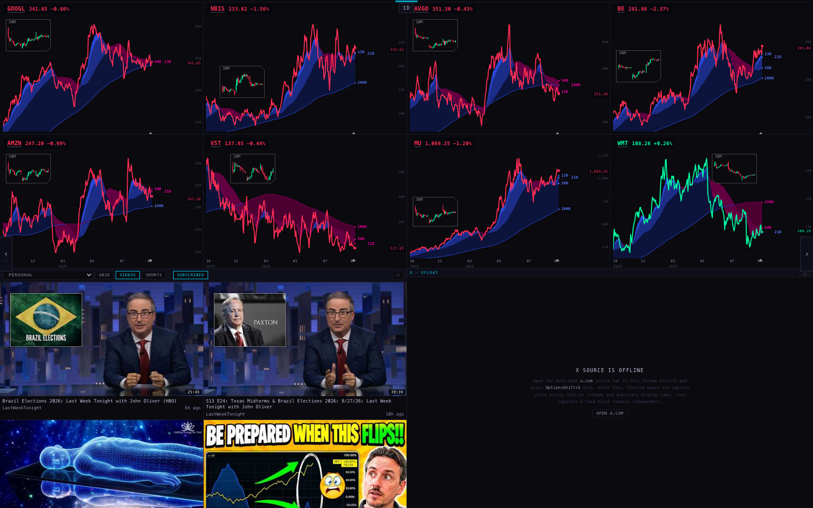
BEFORE · TARGETS · DAY: every chart squeezes 11½ months (13 Oct 2025 →).
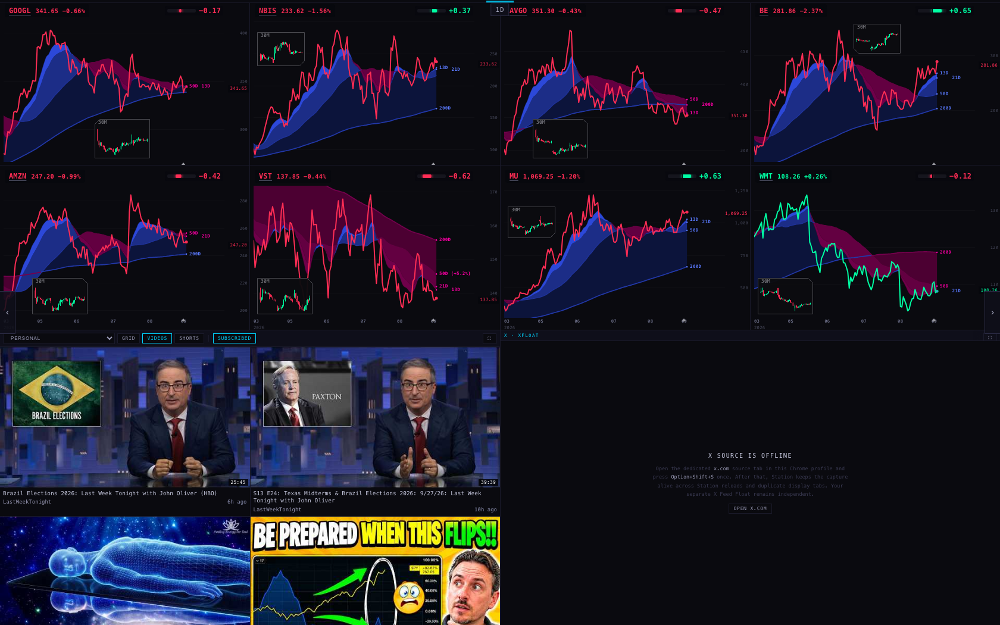
AFTER · the same page, same bars: 6 months (from late March). Geiger chips top right, lens in each chart's emptiest dark patch.
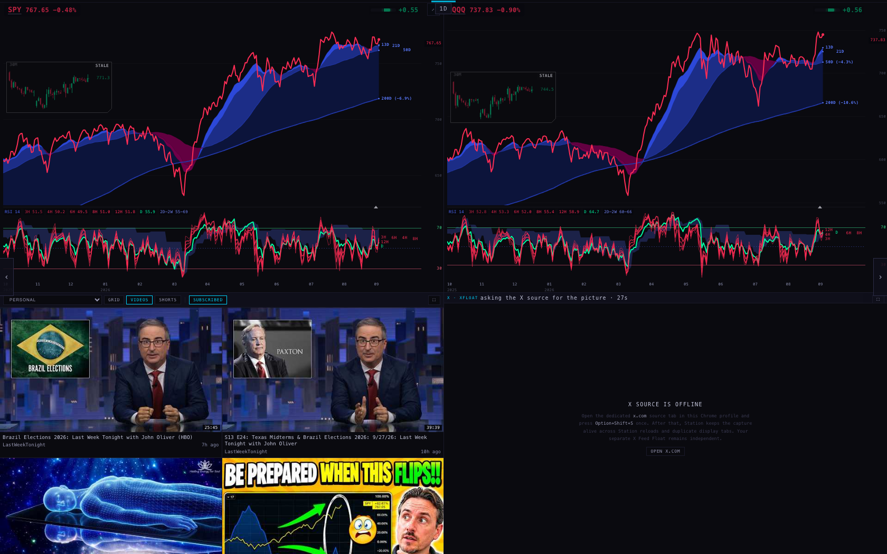
ZOOMED OUT · SPY + QQQ · DAY after 14 wheel notches out: back to the full 240 bars (13 Oct 2025 →), the clouds and the RSI fan follow the wider window, the lens was placed again once the zoom stopped (both clear of the price line). The two charts zoom together (the deck keeps them in step).
2 · The context lens: the rule, written down
"You made some level of rule but a partial rule; it doesn't consider zooming… play around with the default zooms and rewrite the rules so it fits cleanly."
The rule, in order
Only over the older four-fifths of the line on screen. Never over the newest fifth, and never right of it (the average names, the live price, the price scale). The fifth is now measured on the line that is actually drawn. Before, it was measured on the whole plot, which with the new right-hand margin was only about a tenth of the line.
Never on the ticker badge, the Geiger chip, the deck's page arrows or its timeframe tag.
The emptiest dark spot wins. It is judged from the chart's own pixels (price line, clouds, grid). A spot the price line runs through counts as a quarter of a box fuller, so an empty patch always beats a spot where the line runs through.
It shrinks before it covers the price. If every spot at the usual size crosses the line, it tries one size smaller, then its smallest. Only when even that crosses does it take the spot the line crosses least.
Bottom-left when it is about as empty as the best spot (within 5% of the box).
It stays put through data refreshes unless somewhere is clearly (8%) emptier, or its spot now breaks rules 1 to 4.
Zoom and pan: while the chart is moving, the lens holds still. 0.2 s after it stops, the lens is placed again by rules 1 to 6 from the new picture. This is cheap: during a 14-notch zoom on the two-chart page the chart's pixels were read 2 times instead of 28 (one read per chart after the zoom stopped, instead of one per notch per chart).
No room at all: no lens, and the pane records why.
Code: _indicators/station-lens.mjs (placeLens, rules written at the top) and _indicators/lens-placement.mjs (lineTailBox, emptiestSpot). The same rule is checked by tests/station-zoom-fan-20260928.test.mjs.
Checked on the first views, chart by chart
For every lens drawn, the harness asked the page afterwards: is the lens in the newest fifth? On the badge? On the Geiger chip? Crossing the price line?
Page
Lenses
Newest fifth
Badge / chip
Price line
AI 1 · CHIPS (8-up, 3-day)
8
all clear
all clear
all clear
TARGETS · DAY (8-up, daily)
8
all clear
all clear
7 clear. VST crosses a dip even at the smallest size: its chart is price and cloud from edge to edge.
SPY + QQQ · DAY (2-up) as ES/NQ and as SPY/QQQ
4
all clear
all clear
all clear (NQ took the smaller size to clear its peaks)
SPY + QQQ (2-up, 3-day)
2
all clear
all clear
all clear
SPY + QQQ · DAY zoomed out to 240 bars
2
all clear
all clear
all clear
QQQ daily on a phone (390)
1
clear
clear
clear
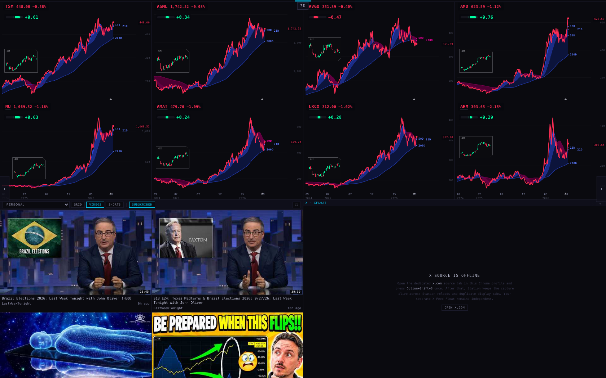
BEFORE · AI 1 · CHIPS: two years per chart, Geiger chip under the badge inside the plot.
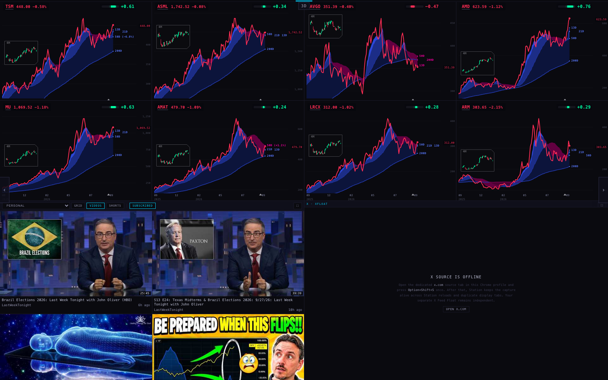
AFTER · one year per chart, the 4H lens in each chart's emptiest dark patch (left side, clear of the line), the Geiger chip top right in the badge row.
3 · The Geiger chip takes the top right
"The system is having trouble with the locations of things, so as not to consume space… I feel like the Geiger should take the TOP RIGHT."
The chip now sits in the strip at the top of each chart, the same row as the ticker badge and above the plot. It lines up with the right edge of the plot, so it is left of the price scale and above the live price label. If the deck's timeframe tag is in the way it moves left, never onto the badge. If that row has no room (a very narrow chart), it drops just inside the plot's top-right corner. The chip therefore never covers the price, the clouds or the lens.
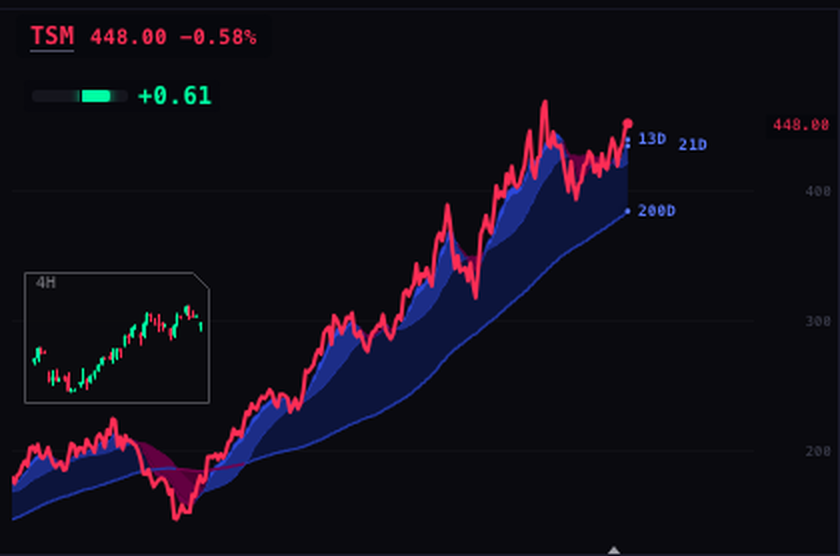
BEFORE (enlarged): TSM, the chip (+0.61) under the badge, inside the chart.
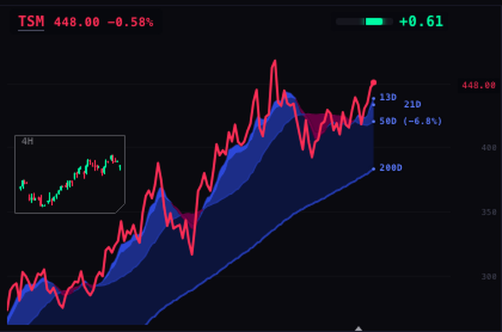
AFTER (enlarged): the chip top right in the badge row, left of the price scale. The plot is free.
4 · The intraday pages: unchanged, at your request
"What I said about S&P and NASDAQ was one that rotates between the turns, so I don't think it was wrong, it was just me surprised."
An earlier version of this branch re-paired the intraday pages (leaders only as a pair, two-chart pages never a leader beside a stock). You withdrew that at about 09:55, so it has been taken back out. The intraday pages are exactly as they are live:
Page
Layout (same as live)
INTRADAY · 4H (6 charts)
leader pair + 4 targets
INTRADAY · 1H (4 charts)
one leader (SPY and QQQ taking turns) + 3 targets
INTRADAY · 30M (2 charts, RSI fan)
one leader + 1 target, one step per visit
A test now pins this layout, so it cannot change again without someone deciding to. Your new idea, "within the slot, switch between them", is a separate job for the coordinator to route. It was not started here.
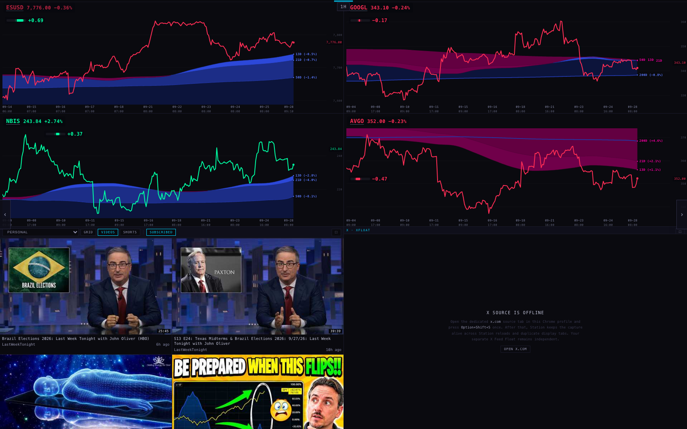
LIVE TODAY · INTRADAY · 1H at 09:20: ES + GOOGL, NBIS, AVGO.
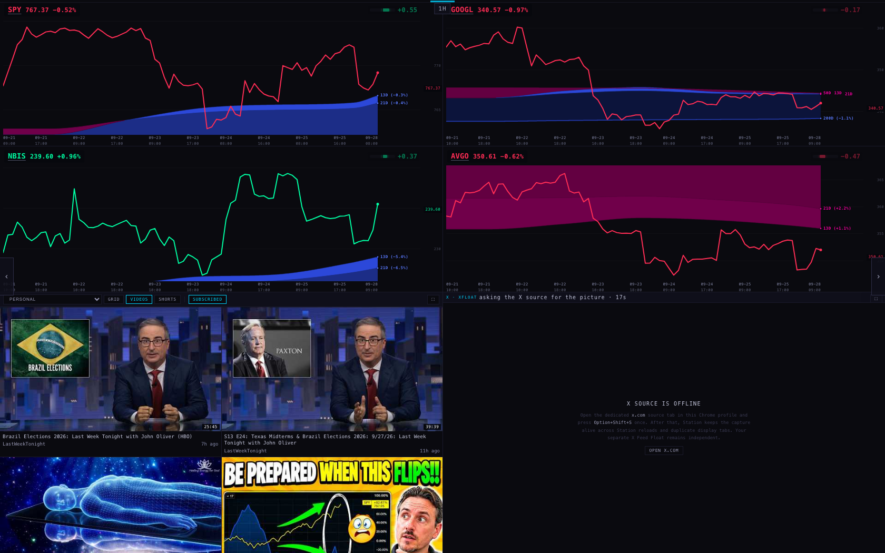
THIS BRANCH · the same page in session: SPY + GOOGL, NBIS, AVGO. Same layout, one week of hourly bars (was three).
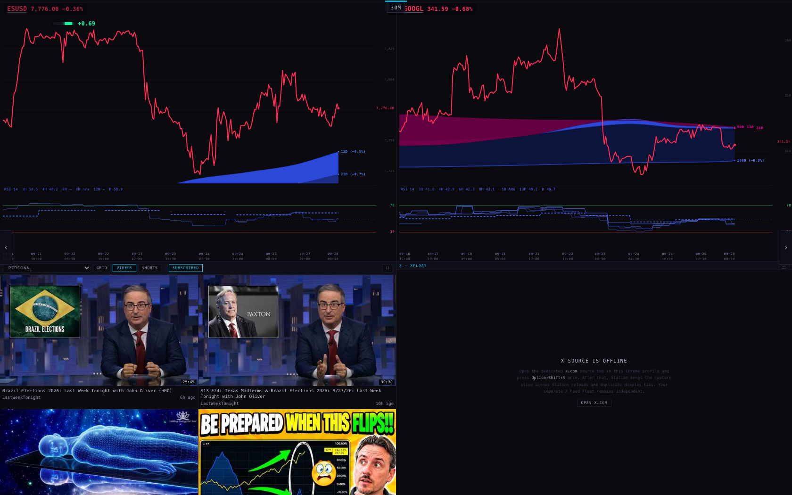
LIVE TODAY · INTRADAY · 30M: ES next to GOOGL, 9 days squeezed in.
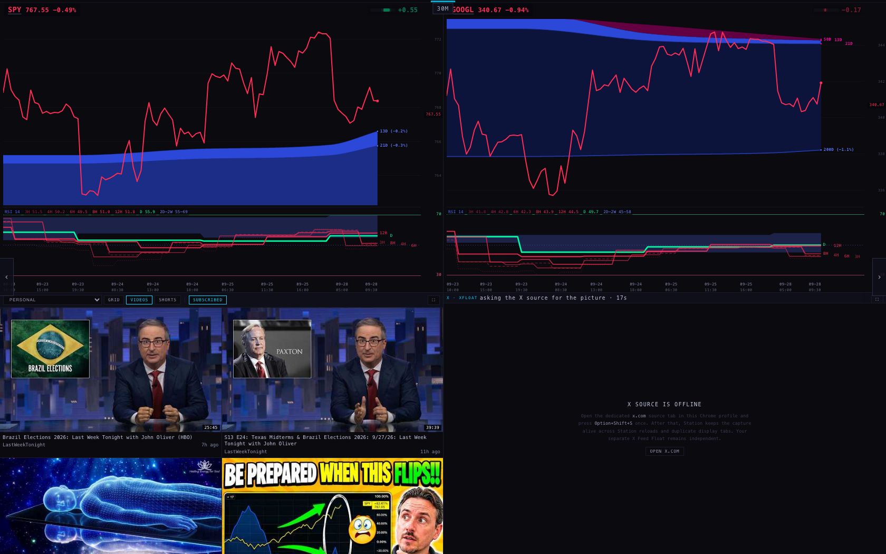
THIS BRANCH · in session: SPY next to GOOGL (same layout), three sessions, the full RSI fan under both.
5 · The RSI fan: your full fan
"The oscillators look really weird to me. I don't think the oscillators include my RSI situation. Three hour, four hour, six hour, eight hour, 12 hour — that's not the full fan. And I only see one line in most of these."
What the full fan is (read from the Indicator Lab, nothing there changed)
The current Lab version is V4 (INDICATOR_LAB/sprints/2026-09-24-stack-alignment/rotation-output/RSI_MTF_Context_V4.pine, its review notes, and the "independent MTF" card on the Lab page):
six lines: RSI 14 on the 3H, 4H, 6H, 8H, 12H and daily bars, each computed on its own bars, with no smoothing (2H exists but is off by default);
the slow context cloud: at every bar, the band between the lowest and the highest of the 2-day, 3-day, weekly and 2-week RSI. These are four more RSIs, not moving averages. The Lab draws the band at 24% strength behind the lines. This cloud was the missing part. The Station drew the six lines only;
reference lines at 30, 50 and 70, and a name at the right end of each line.
Why most charts showed one line
Missing data on futures. Measured today against the chart API: for ES and NQ it serves only about a month of intraday bars (1h: 485 bars from 30 Aug; 3h: 164; 4h: 254 from 30 Jul; 6h: 82; 12h: 45), and no 8h at all. The fan threw away the first 150 values of every line to let it settle, so 6H and 12H drew nothing ("—"), 8H said "n/a", and 3H/4H covered only the last few weeks. On a daily or 3-day chart that is a few pixels at the right edge. The only line across the chart was the daily one.
Overlap and one colour. On stocks all six were there, but in one indigo shade and thin, and six RSIs between 40 and 60 drawn on a fixed 0–100 scale sat in a fifth of the panel. They looked like one blurred line.
A stopped source. For stocks, the API's 8h bars stop on 18 Aug (and its 2D on 16 Aug), so 8H quietly ended six weeks ago.
What changed
The cloud is drawn: min–max of 2D, 3D, W and 2W RSI 14, in the Lab's own blue at 24%, behind the lines, and named in the legend ("2D–2W 55–69").
Missing widths are built from bars we already read, never invented: 8H = two 4H bars, 12H = three 4H bars, 6H = two 3H bars (joined on the Eastern clock the API itself uses), 2D = two sessions, 2W = two weeks. A built line is used only when the served one is missing, too short, or stops earlier. On ES that turns 8H from "n/a" into 51.9 and 12H from "—" into 53.7. On stocks 8H now reaches today.
Short histories still draw. With under 300 bars, a line settles over 42 to 84 bars instead of 150. Those values can sit a few tenths away from TradingView's, which starts at the listing, so the legend marks them "≈" (on ES today: 3H, 4H, 6H, 8H, 12H).
Colour follows the Station rule: each line is green when its RSI is at or above where it stood a day earlier, red when below. The five intraday RSIs usually move together, so they usually share a colour. The timeframe is therefore told by a strong ramp: 3H is a faint dotted line, 4H a light dashed one, then 6H, 8H and 12H are solid and each heavier and more solid than the last, and the daily line is the heaviest. Every line also has its name at its right end (3H, 4H, 6H, 8H, 12H, D). The first version of this branch used a weak ramp, and a reviewer found the five still read as one red bundle. The ramp was strengthened after that review.
Where the futures lines begin is marked. On ES/NQ the intraday lines start part-way across a daily or 3-day chart. A dotted rule and a small tag, e.g. "4H/8H/12H from 19 Aug" and "3H/6H from 8 Sep", show where each group starts. Before those points only the daily line and the cloud are drawn, so a lone daily line is no longer mistaken for the whole fan. Stocks have the full history and get no mark.
The panel's scale follows what is on screen (always showing 30 and 70, a little room either side), so the lines spread out instead of sitting in a thin strip.
Before and after, same page, same bars, same minute (ES daily, 09:20 New York time):
BEFORE: 3H 50.5 · 4H 48.2 · 6H — · 8H n/a · 12H — · D 58.9 · no cloud
AFTER: 3H ≈50.5 · 4H ≈48.2 · 6H ≈53.1 · 8H ≈51.9 · 12H ≈53.7 · D 58.9 · cloud 2D–2W 58–69
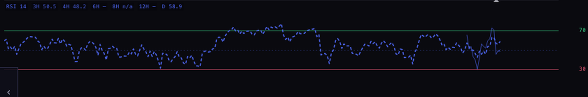
BEFORE (enlarged): ES daily fan. One dashed blue daily line across; 3H and 4H only at the far right; 6H and 12H "—", 8H "n/a".
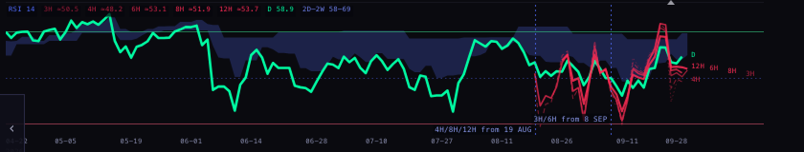
AFTER (enlarged): the blue 2D–2W cloud behind; the daily line green (up on the day); the intraday lines red (down on the day). 4H, 8H and 12H begin at the "from 19 Aug" rule and 3H/6H at the "from 8 Sep" rule. Before 19 Aug the daily line runs alone, because the API holds only about a month of futures intraday bars. Every line is named at its right end.
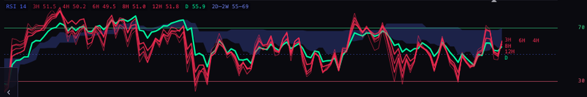
FIRST VERSION (enlarged, 09:45, before the review): SPY daily, the right half. The five intraday lines, all red, sit on top of each other with near-equal weight. Apart from the tags at the right edge they read as one red bundle.NOW (enlarged, about 10:10, live data a little later than the picture above): SPY daily, the right half. 3H is the faint dotted line and 4H the light dashed one. 12H is the heaviest red, and D the heavy green. Where the timeframes separate (the dips in late August and early September) each line can be followed. On most days the five intraday RSIs, sampled at each day's close, sit within a few points of each other. They will always overlap there, whatever the styling.
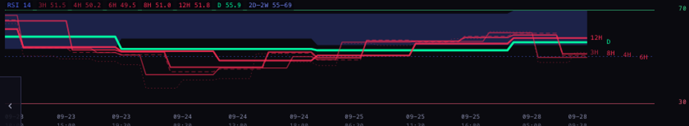
NOW (enlarged): SPY on 30-minute bars (INTRADAY · 30M). Slower lines step, because a line only moves when its own bar has finished (the Station never shows an unfinished value, and TradingView's history looks the same way).
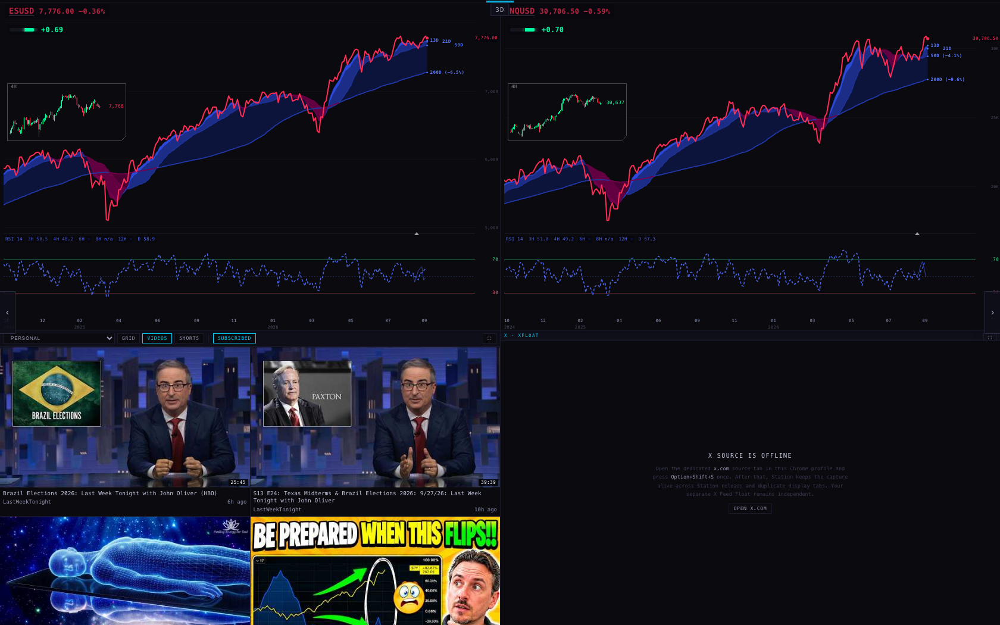
BEFORE · SPY + QQQ (3-day) at 09:20 as ES/NQ: two years, one visible fan line.
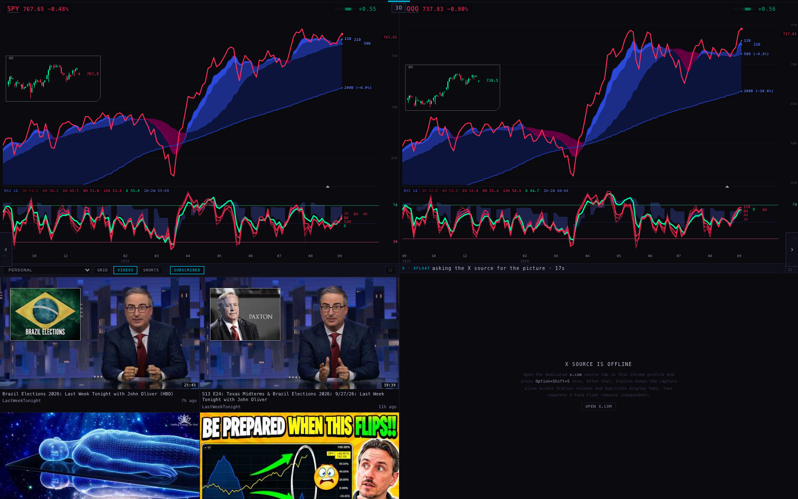
AFTER · in session as SPY/QQQ: one year, full fan with cloud across the whole year, 4H lens top-left, Geiger top right. (At 09:20 as ES/NQ the same page marks "3H/4H/8H/12H from 19 Aug" and "6H from 12 Sep".)
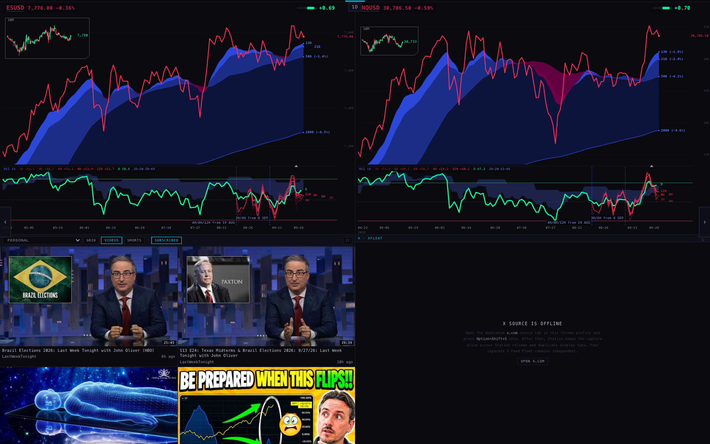
SPY + QQQ · DAY at 09:20 (outside 09:30–16:30): ES + NQ, six months. The fan's intraday lines cover the right part only, and the rules mark where they begin.
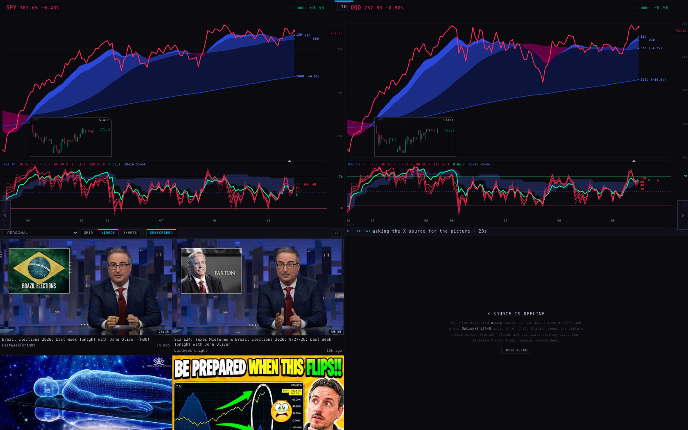
The same page at 09:45 (inside): SPY + QQQ. The lens says STALE here; see "what could be wrong".
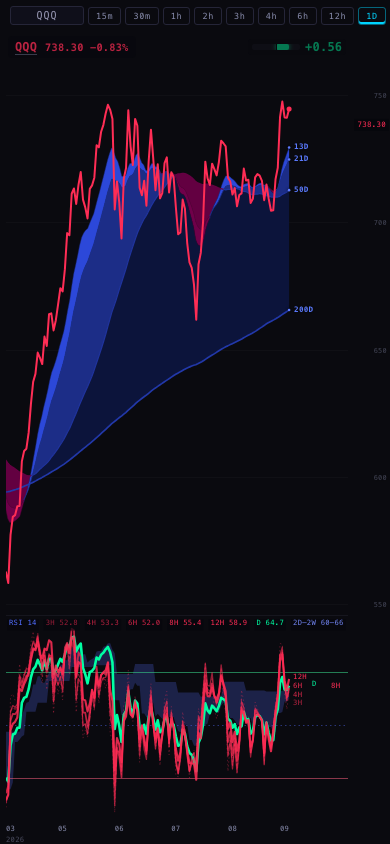
PHONE (390) · QQQ daily with ?rsi=1: Geiger top right, lens bottom-left clear of the line, fan with cloud and names. (On deck pages the fan still hides itself on a phone-narrow pane, as before.)
5b · The oscillator pages: TARGETS · RSI (8 charts) and OTHER INDEXES · RSI (6 charts)
These two pages carry the same fan under every chart, and they already did before today. The first version of this page wrongly said they had none. They are probably the pages you meant by "the oscillators look really weird". Before, each chart's fan was one indigo shade with no cloud, and 8H was six weeks old: the tag read "18 Aug", because the API's stock 8h bars stop there. Now each chart has the cloud, green/red lines with the ramp, and 8H up to today (built from 4H bars).
LIVE TODAY · TARGETS · RSI: 11½ months per chart, the fan all indigo, "8H … 18 Aug" on every chart, no cloud.THIS BRANCH · 6 months per chart, the fan with the 2D–2W cloud, green/red lines, names at the right end, 8H current.
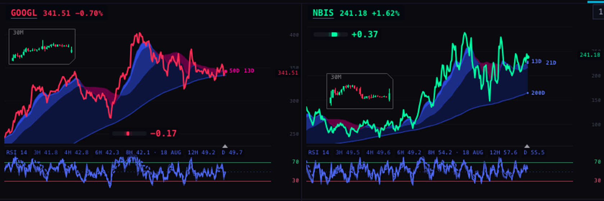
BEFORE (enlarged): GOOGL and NBIS. One indigo scribble. 8H 42.1 is "18 Aug".
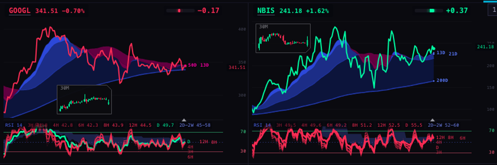
AFTER (enlarged): the same two. The cloud (45–58, 52–60), GOOGL's daily line green and its intraday lines red, NBIS all red. On an 8-up page the fan panel is only about 50 pixels tall, so the lines are close together there by nature.
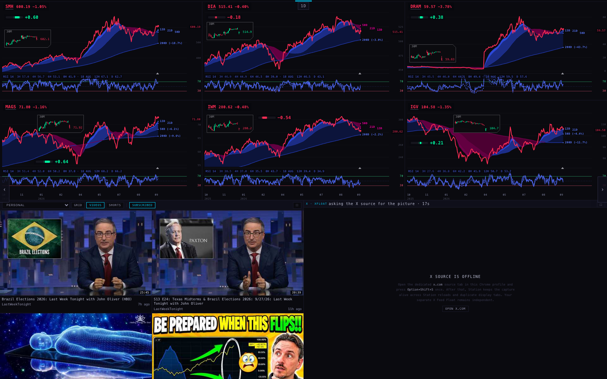
LIVE TODAY · OTHER INDEXES · RSI (SMH, DIA, DRAM, MAGS, IWM, IGV).
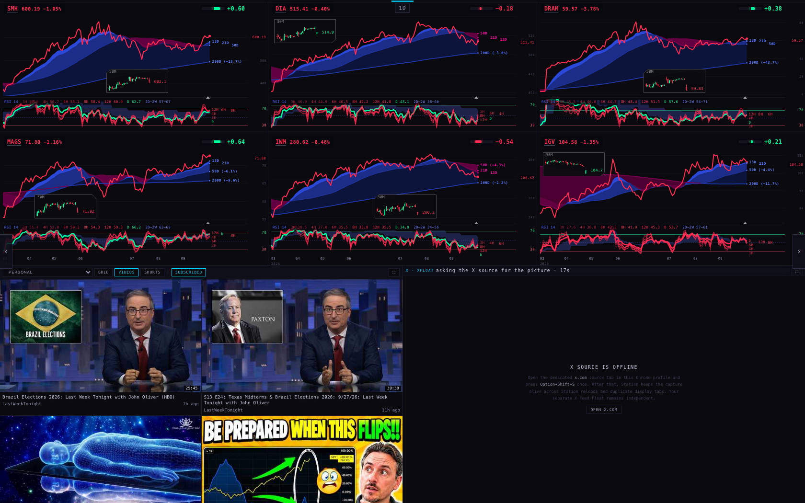
THIS BRANCH · the same six: full fan with cloud on each.
Measured (headless, 1680)
TARGETS · RSI
OTHER INDEXES · RSI
Time until every chart's fan has all six lines and its cloud, cold first load (nothing cached, every bar read live)
11.1 s (two runs, both 11.1 s; first chart 4 s, last BE at 11 s)
4.0 s
A lap page is on screen for about
33 s. The fans fill well inside that, so no staggering or trimming was added.
Lenses clear of the newest fifth, badge and chip
8 of 8
6 of 6
Lenses clear of the price line
6 of 8. BE and VST cross it: at 6 months those two charts are filled edge to edge. On the live page (11½ months) both were clear.
6 of 6
A reviewer saw AVGO and VST still empty at 18 s and full by 45 s. My cold runs (about 10:05 ET) took 11 s. The difference is probably how busy the chart API was at the time; I could not reproduce the slower read. Readouts: harness/after-targetsOsc.json, after-otherIndexesOsc.json, before-*.json; fill-time probe harness/fill.mjs.
6 · Where the numbers come from
Prices and all RSI source bars: the chart API (scintilla-massive-chart-api.fly.dev), the same route the charts already use. RSI is the detail view's Wilder RSI 14 (the same arithmetic TradingView's ta.rsi uses). Nothing new is stored in the browser.
Built widths (8H, 12H, 6H, 2D, 2W): joined from the served 4H, 3H, daily and weekly bars as described in section 5. Nothing else is filled in.
Bar counts and dates in this page: read today (28 Sep, 09:20–09:50 New York time) from the chart API, read-only.
Geiger chips in the pictures: the live API's composite values. Proof-only relay change: the live Geiger reading now carries equalizer fingerprint d0da9a46… (captured 13:26Z today), and the Station accepts only f6cf97b5…. So on the live Station today every stock's Geiger chip is hidden; ES/NQ still show through their own path. To show where the chip goes, the local relay swapped the fingerprint for the pictures only. The Station code was not changed (see decision 1).
7 · What could be wrong
The futures fan is only complete for about the last month: ES/NQ intraday lines only reach back that far (the API keeps a month of futures intraday bars), and they carry "≈". On a 6-month daily chart the daily line runs alone for roughly the first two-thirds; the dotted rules mark where the others begin (decision 3 would fix it).
Built lines vs TradingView: our 8H/12H/6H are joined on the Eastern clock from 00:00 (as the API cuts its own), and TradingView cuts intraday bars from the session open, so values can differ by a few points (this was already true of every intraday width; see the bar-rule note on each chart). The 2D pairs are counted from a fixed date without the holiday calendar, so a pair can differ from TradingView's by one day around a holiday.
Three lenses still cross the line: VST on TARGETS · DAY, and BE and VST on TARGETS · RSI. Those charts are filled from edge to edge at 6 months, and even the smallest lens has nowhere clear to go, so it takes the spot it crosses least.
Lens says STALE from 09:30 to about 10:05 every morning (seen in the in-session picture). This existed before today's change. The lens counts today's session as open at 09:30, but the first regular 30-minute bar only finishes at 10:00. Not changed here.
Intraday stepping: on 30m and 1h charts the slower lines are steps, because a line only moves when its own bar has finished. That is deliberate (no peeking ahead) and matches TradingView's history.
The 2-chart fan now asks the API for two more widths per chart (3D and weekly, for the cloud), and more 4H bars for building 8H/12H.
8 · Tests
807 tests run, 789 pass. The 18 that fail are exactly the 18 that already fail on the live Station, by name; nothing new fails. New suite tests/station-zoom-fan-20260928.test.mjs (17 tests): first views and zoom-out, the scale following the window, the lens rules 1–6 (fifth of the drawn line, keep-outs, shrink before crossing, hold while moving), the chip top right, the intraday pages kept exactly as live, lap length unchanged, the fan's V4 lines and cloud, the strong ramp and the two broken lines, the "from <day>" marks (and no mark when the lines fill the window), building 8H/12H/2D, when a built line is used, short-history warm-up and "≈", the cloud's min/max, green/red by the day. Tests in four older files were updated to the new behaviour (the O1 chip rule, the first-view zoom test, the fan's colour and fetch pins). The two older files that pin the intraday pages are back exactly as they are live.
9 · What was not done
No deploy, no database write, no paid service, nothing on the iMac, nothing under the Indicator Lab (only read).
The Station's accepted Geiger fingerprint was not changed (decision 1).
No futures intraday history was backfilled (decision 3); the lens's 09:30–10:00 STALE was not changed.
The intraday re-pairing was taken back out at your request (section 4). "Within the slot, switch between them" was not started; it is for the coordinator to route.
Four-up and six-up pages without an RSI study (for example the TARGETS · DAY and AI pages) have no fan, as before. The two oscillator pages that do carry one are covered in section 5b.
10 · Decisions for you
Stock Geiger chips are hidden on the live Station today. The Geiger's equalizer changed (this morning's reading is d0da9a46…; the Station accepts only f6cf97b5…). Recommendation: the coordinator confirms the change is the agreed one (2h weight set to 0) and updates the Station's accepted fingerprint in the same release as this branch.
How the fan's lines are told apart. Now: green or red by each line's own day (the Station rule), with a strong ramp from a faint dotted 3H to a heavy D (compare the two SPY pictures in section 5). The Lab draws them all in one blue, with the same kind of ramp. Recommendation: keep green/red with the strong ramp. If after a day of trading you still cannot follow one line, the next step is a different shade per timeframe inside green and red. That would bend the no-grey-lines rule, so it is your call.
Futures RSI depth. ES/NQ intraday lines reach back only a month, because the API holds a month of futures intraday bars. Until then the panel marks where they begin. Recommendation: a keyed job on Fly backfills at least six months of futures hourly (or 4-hour) bars from FMP. After that the ES/NQ fan covers the whole daily view with no "≈" and no marks.
Harness (headless only): deliverables/20260928/station-zoom-fan/harness/shot.mjs + rig.mjs (+ fill.mjs for fan fill time); the per-page readouts are the after-*.json / before-*.json files beside them. "Before" pictures of the oscillator pages were taken from the live Station's code (dedbc31) on the same cached bars. The review fixes (the intraday pages put back, the strong ramp, the start marks, section 5b) came after an adversarial review of the first version.